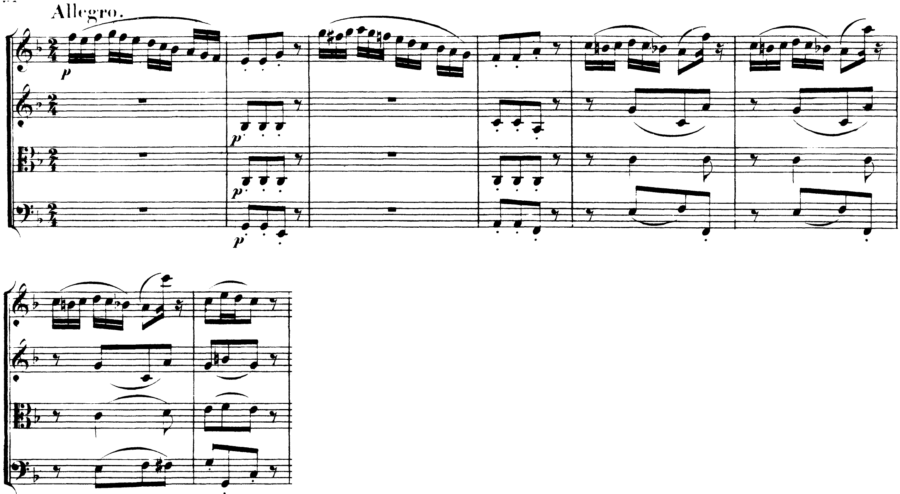

Ora di percezione: otto battute in fa maggiore, in tempo composto. Il metodo delle tre passate, i punti fermi, il cromatismo di passaggio.
Un docente della commissione suona al pianoforte una breve melodia (generalmente di 8 misure) e il candidato, senza vedere i tasti del pianoforte, ma solo ascoltando, deve scrivere sul foglio pentagrammato la melodia eseguita dal docente.
E. Pozzoli, Il dettato musicale, p. 7
A1Armonizziamo una melodia con le triadi secondarie, pp. 2–7
Il volume del 4° anno non ha un’ora di dettato per questa unità. Le melodie delle lezioni 1–3 (pp. 2–7), cantate e poi scritte a memoria, sono il materiale per esercitarsi da soli.
Il dettato melodico è la trascrizione di una melodia ascoltata: per ogni suono si scrivono l’altezza e la durata. La prova d’esame descritta da Pozzoli è una melodia di otto misure, proposta in quattro sezioni (A, B, C, D) di due misure ciascuna, dopo il riferimento della tonalità (E. Pozzoli, Il dettato musicale, p. 7). Il dettato di quest’ora è diatonico (nessuna alterazione) e non modulante.
Il metodo delle tre passate. 1. Solo il ritmo, con le tacche sopra il rigo. 2. Il profilo, una linea che sale e scende. 3. Le note, partendo dai punti fermi: il primo suono (dato), le note delle cadenze, le note sui tempi forti che formano l’accordo di tonica o di dominante.
Il tempo composto. In 6/8 e in 12/8 la pulsazione è la semiminima puntata, divisa in tre crome. Le figure più frequenti sono la semiminima puntata, le tre crome, la coppia semiminima–croma.
Le otto battute sono due frasi di quattro. La prima apre con l’arpeggio della tonica (fa–la–do) e risponde con quello della dominante con la settima (si♭–sol–mi–do), poi sale per grado e si ferma sul do (5̂): una semicadenza. La seconda riparte dal re e scende fino alla chiusa sol–mi–fa, cioè 2̂–7̂–1̂. I punti fermi sono cinque: il primo fa, il do lungo della b. 4, il fa finale, e le due battute di arpeggio, che si riconoscono dagli accordi più che dalle singole note. Il ritmo usa tre sole figure: semiminima–croma, tre crome, semiminima puntata.
Si batte la pulsazione in semiminime puntate e si conta in quante battute la melodia arriva alla prima chiusa. Poi si scrive, solo con le tacche, il ritmo delle prime due battute.
Scrivere altezza e ritmo nella stessa passata: si perdono tutti e due. In tempo composto, poi, il secondo errore è raggruppare le crome a due, come in 3/4: in 6/8 le crome si raggruppano a tre, e la battuta ha due pulsazioni, non tre.
La nota di passaggio colma il salto fra due note: «possiamo colmare un salto melodico tra due note mediante movimenti di grado, diatonici o cromatici; le note poste tra i due estremi vengono chiamate note di passaggio» (W. Piston, Armonia, p. 111). La nota di passaggio cromatica divide in due semitoni un intervallo di tono (sol–sol♯–la). La nota di volta cromatica, invece, si allontana di un semitono e torna alla nota di partenza (do–si♮–do; Piston, p. 113).
L’ortografia. Nella linea che sale la nota cromatica si scrive alzando la nota di partenza (sol–sol♯–la); nella linea che scende abbassando la nota di partenza (si–si♭–la). La nota cromatica di passaggio non cambia la tonalità: la melodia resta diatonica nelle note d’appoggio.
Alla b. 5 la linea sale mi–fa♯–sol e prosegue per semitono: il sol♯ sta sul quarto movimento, debole, e porta al la della b. 6. Alla b. 7 la linea scende si–si♭–la: il si♭ sta sul secondo movimento e risolve sul la. Tolte le due note cromatiche, la melodia è tutta nella scala di sol maggiore. Nel dettato la nota cromatica si riconosce perché la distanza fra due suoni contigui è più piccola delle altre, e si scrive con il segno che segue la direzione della linea.
Due ascolti delle prime otto battute. Al primo si segue il violino I e si indica in quali battute torna la figura do–si–do. Al secondo si segue il violoncello alla b. 7 e si canta, sottovoce, il passaggio fa–fa♯–sol.

Il violino I apre con una scala discendente di fa maggiore in sestine di semicrome, poi la stessa figura sulla dominante con una nota di volta cromatica (sol–fa♯–sol, b. 3). Nelle bb. 5–7 il gruppo do–si♮–do–re–do–si♭ ripete tre volte la volta cromatica inferiore del do (si♮) e la fa seguire dal si♭ diatonico che scende al la. Alla b. 7 il violoncello sale fa–fa♯–sol: è un passaggio cromatico vero, che porta al sol della b. 8, sotto il 6/4 e la dominante della dominante che chiudono la frase sul V. Il fa♯ e il si♮ sono scritti con il diesis e con il bequadro perché salgono; il si♭ della stessa battuta scende.
Scrivere la nota cromatica con il nome sbagliato: la♭ invece di sol♯ nella linea che sale, la♯ invece di si♭ in quella che scende. Le altezze suonano uguali, ma la linea scritta non mostra più dove va la nota. Il secondo errore è leggere la nota cromatica come una modulazione: dura un movimento debole e risolve subito.
Re maggiore, 6/8, otto battute, chiave di violino; il primo suono è il re sotto il rigo. La melodia contiene una sola nota cromatica di passaggio. Si esegue al pianoforte: due volte intera, poi le sezioni A (bb. 1–2), B, C, D due volte ciascuna, poi due volte intera.
Prima passata: il ritmo, con le tacche. Seconda: il profilo. Terza: le note, dai punti fermi (primo suono, fine della b. 4, fine della b. 8).
Tre passate separate: ritmo, profilo, note. Prima i punti fermi (primo suono, cadenze, arpeggi di tonica e di dominante), poi il resto. In tempo composto la pulsazione è la semiminima puntata e le crome vanno a tre.
La nota di passaggio cromatica divide un tono in due semitoni e si scrive nella direzione della linea: diesis o bequadro in salita, bemolle o bequadro in discesa. Non cambia la tonalità. Il dettato armonico con le secondarie e con la settima è l’ora 9 (U2, lezione 3).
Con questa ora si chiude l’unità 1; l’unità 2 tratta la settima di dominante e la sua provenienza. Dopo la sintesi, il solfeggio di chiusura (parlato, cantato, ritmico) e i compiti scritti per casa.
Compiti per la prossima volta
n. 60 e n. 61 parlato · n. 62 e n. 63 cantato · n. 64 e n. 65 ritmico · n. 66 endecalineo
Ogni pezzo a tempo, senza fermarti: il parlato a nomi, il cantato prendendo il primo suono dalla tastiera, il ritmico battendo la pulsazione.
Scrivi la linea del basso sul quaderno, in chiave di basso: otto battute in 12/8, fa maggiore. Il primo suono è do. Prima il riferimento, poi tutto due volte, ogni coppia di battute due volte, il collegamento 1–4, 3–6 e 5–8, e tutto per controllare.
Il riferimento: accordo di tonica e primo suono
Il dettato · otto battute
Le sezioni (riferimento, tutto, le coppie, il collegamento) si ascoltano una per una e si ripetono quanto serve; le fasi fanno la procedura della classe, con gli annunci e le pause, da qualunque punto.
Sul quaderno scrivi in testa la sigla C4-D-U01-L6. Si corregge all’inizio della prossima lezione.
Compiti per la prossima volta
Scrivi un contrappunto di seconda specie (due note contro una) sopra il canto fermo, in modo dorico (finale re): nove battute. Comincia su una consonanza perfetta, alla cadenza la sensibile sale alla finale, niente quinte e ottave consecutive.
Sul quaderno, con la sigla C4-CP-U01-L6 in testa; la foto va su Classroom.
Realizza a quattro parti il basso senza numeri: otto battute in 4/4, do maggiore. Trova tu l’accordo di ogni nota (la regola dell’ottava è il punto di partenza) e scrivilo sotto; poi il soprano, poi le voci interne. Accordi che puoi usare: anche le dominanti secondarie.
Sul quaderno, con la sigla C4-BD-U01-L6 in testa; la foto va su Classroom.
Armonizza a quattro parti il canto dato: otto battute in 4/4, do maggiore. Prima le cadenze, poi il basso per intero, e solo alla fine contralto e tenore. Accordi che puoi usare: anche le dominanti secondarie.
Sul quaderno, con la sigla C4-CD-U01-L6 in testa; la foto va su Classroom.
Solfeggio dal quaderno di lettura: parlato n. 60, 61; cantato n. 62, 63; ritmico n. 64, 65; endecalineo n. 66 (a tempo, senza fermarsi). Dettato C4-D-U01-L6 dalla pagina della lezione (sezioni da ascoltare, o le fasi della procedura guidata), sul quaderno con la sigla. Contrappunto di seconda specie sul canto fermo (C4-CP-U01-L6). Basso senza numeri da realizzare a quattro parti (C4-BD-U01-L6). Canto dato da armonizzare a quattro parti (C4-CD-U01-L6).
In classe
A nomi, a tempo, con la mano che batte. Chi si ferma riparte dalla battuta dopo.
Apri il n. 56 nel quaderno di lettura ↗ chiave di contralto · 3/4
In classe
Si prende il tono dalla tastiera, si canta insieme; poi a gruppi.
Apri il n. 57 nel quaderno di lettura ↗ chiave di violino · 6/8
In classe
Tutti insieme, battendo la pulsazione. Poi a file, due battute a testa.
In classe
A nomi, a tempo, sul doppio rigo: prima si trovano con gli occhi i passaggi da una chiave all’altra.